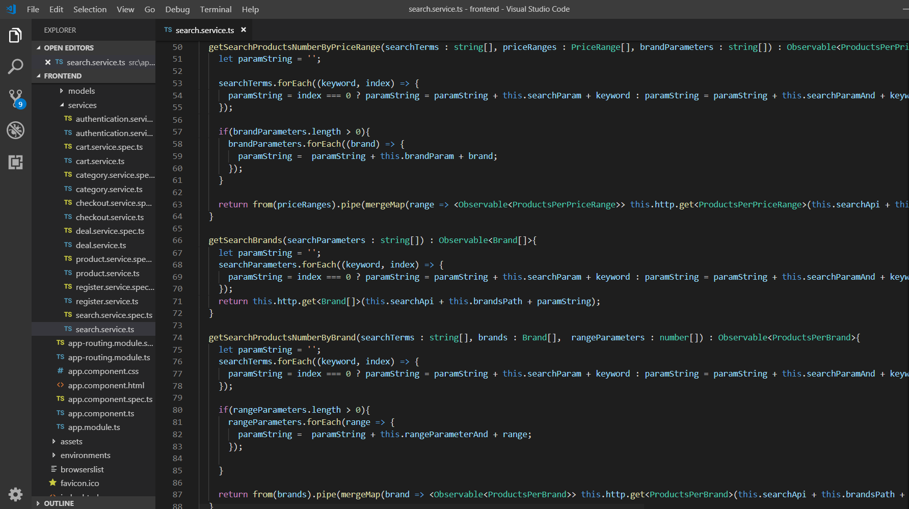
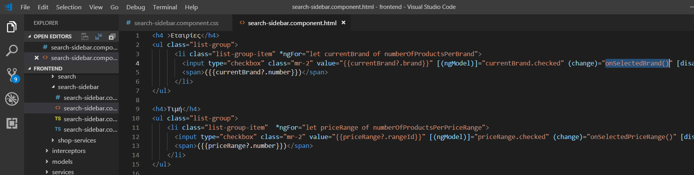
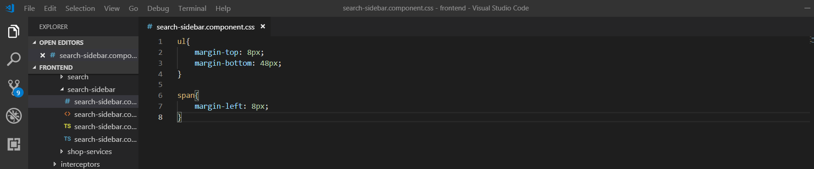
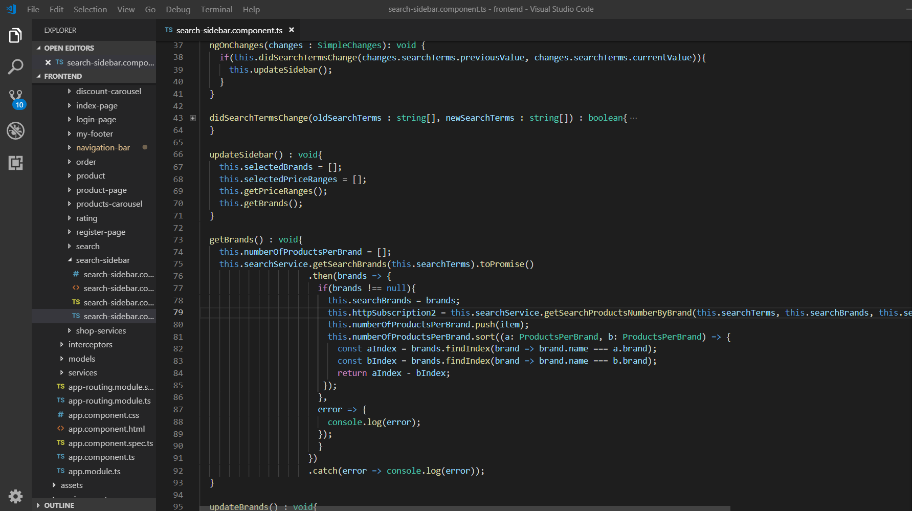
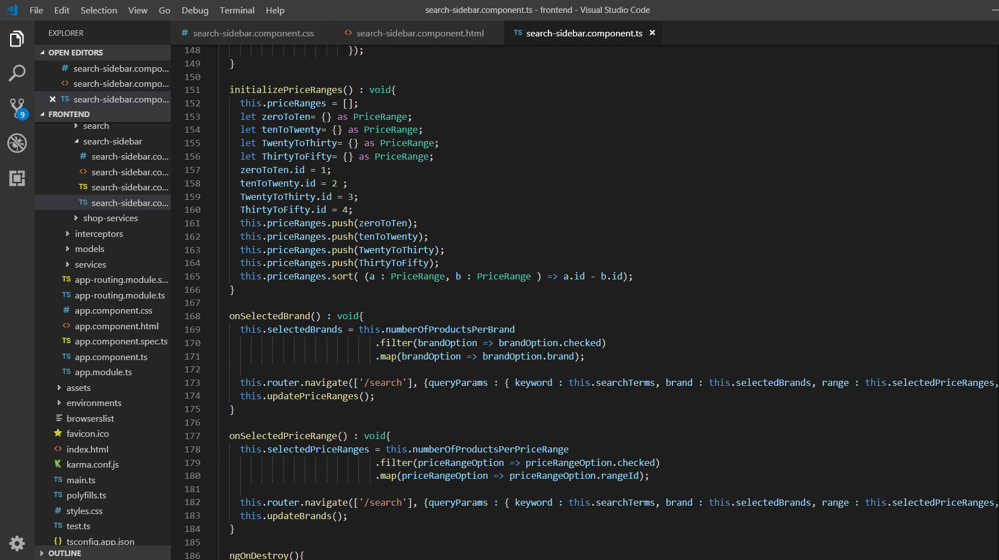

Θα δημιουργήσουμε το search-sidebar component, το οποίο περιέχει δύο φίλτρα για τα προϊόντα. Ο χρήστης θα μπορεί, να αναζητήσει προϊόντα συγκεκριμένων εταιριών ή/και μέσα σε ένα συγκεκριμένο διάστημα τιμών(10-20ευρώ).
Για την αρχικοποίηση των τιμών των φίλτρων, ο client θα ζητάει τον αριθμό των προϊόντων της κάθε εταιρίας. Αν επιλεχθεί κάποιο φίλτρο από τα διαστήματα τιμών μετά, τότε στέλνει μια παράμετρο range, για να πάρει τον αριθμό των προϊόντων της κάθε εταιρίας, σε ένα διάστημα τιμών.
Για την αρχικοποίηση των τιμών των φίλτρων, ο client θα ζητάει τον αριθμό των προϊόντων ανά διάστημα τιμών. Αν επιλεχθεί κάποιο φίλτρο από τις εταιρίες μετά, τότε στέλνει μια παράμετρο brand, για να πάρει τον αριθμό των προϊόντων στο συγκεκριμένο διάστημα τιμών, που ανήκουν σε αυτές τις εταιρίες.
Υλοποιούμε τη μέθοδο List<Brand> findSearchBrands(String[] searchTerms) {
@Override
public List<Brand> findSearchBrands(String[] searchTerms) {
CriteriaBuilder criteriaBuilder = entityManager.getCriteriaBuilder();
CriteriaQuery<Brand> criteriaQuery = criteriaBuilder.createQuery(Brand.class);
Root<Product> productsRoot = criteriaQuery.from(Product.class);
Δημιουργούμε τη συνθήκη του WHERE "prod.name like '%' + :searchTerm + '%' "
List<Predicate> searchPredicatesList = new ArrayList<>();
if(searchTerms.length > 0){
for(String term : searchTerms){
searchPredicatesList.add(criteriaBuilder.like(productsRoot.get("name"), "%" + term +"%"));
}
}
Predicate[] searchPredicatesArray = new Predicate[searchPredicatesList.size()];
searchPredicatesList.toArray(searchPredicatesArray);
Predicate searchPredicate = criteriaBuilder.or(searchPredicatesArray);
Εκτελούμε το ερώτημα και επιστρέφουμε τις εταιρίες
criteriaQuery.select(productsRoot.get("brand")).distinct(true);
criteriaQuery.where(criteriaBuilder.and(searchPredicate));
criteriaQuery.orderBy(criteriaBuilder.asc(productsRoot.get("brand").get("name")));
List<Brand> brands = entityManager.createQuery(criteriaQuery).getResultList();
return brands;
Υλοποιούμε τη μέθοδο int findSearchProductsNumberByRange(String[] searchTerms, double min, double max, List<Brand> brands) {
@Override
public int findSearchProductsNumberByRange(String[] searchTerms, double min, double max, List<Brand> brands) {
CriteriaBuilder criteriaBuilder = entityManager.getCriteriaBuilder();
CriteriaQuery<Product> criteriaQuery = criteriaBuilder.createQuery(Product.class);
Root<Product> productsRoot = criteriaQuery.from(Product.class);
Δημιουργούμε τις συνθήκες του WHERE "prod.name like '%' + :searchTerm + '%' ", "prod.price between :range1 and :range2"
List<Predicate> searchPredicatesList = new ArrayList<>();
if(searchTerms.length > 0){
for(String term : searchTerms){
searchPredicatesList.add(criteriaBuilder.like(productsRoot.get("name"), "%" + term +"%"));
}
}
Predicate[] searchPredicatesArray = new Predicate[searchPredicatesList.size()];
searchPredicatesList.toArray(searchPredicatesArray);
Predicate brandsPredicate = criteriaBuilder.or(brandsPredicateArray);
Predicate priceRangePredicate = criteriaBuilder.between(productsRoot.get("price"), min, max);
Δημιουργούμε το κατάλληλο ερώτημα, ανάλογα με το αν είναι επιλεγμένο τo φίλτρo των εταιριών
if(!brands.isEmpty()){
List<Predicate> brandPredicateList = new ArrayList<>();
for(int i=0; i < brands.size(); i++){
brandPredicateList.add(criteriaBuilder.equal(productsRoot.get("brand"), brands.get(i)));
}
Predicate[] brandsPredicateArray = new Predicate[brandPredicateList.size()];
brandPredicateList.toArray(brandsPredicateArray);
Predicate brandsPredicate = criteriaBuilder.or(brandsPredicateArray);
criteriaQuery.where(criteriaBuilder.and(searchPredicate, priceRangePredicate, brandsPredicate));
}else{
criteriaQuery.where(criteriaBuilder.and(searchPredicate, priceRangePredicate));
}
Βρίσκουμε τον αριθμό και τον επιστρέφουμε
int number = 0;
number = entityManager.createQuery(criteriaQuery).getResultList().size();
return number;
Υλοποιούμε τη μέθοδο int findSearchProductsNumberByBrand(String[] searchTerms, Brand brand, List<double[]> priceRanges) {
@Override
public int findSearchProductsNumberByBrand(String[] searchTerms, Brand brand, List<double[]> priceRanges)) {
CriteriaBuilder criteriaBuilder = entityManager.getCriteriaBuilder();
CriteriaQuery<Product> criteriaQuery = criteriaBuilder.createQuery(Product.class);
Root<Product> productsRoot = criteriaQuery.from(Product.class);
Δημιουργούμε τη συνθήκη WHERE "prod.name like '%' + :searchTerm + '%' "
List<Predicate> searchPredicatesList = new ArrayList<>();
if(searchTerms.length > 0){
for(String term : searchTerms){
searchPredicatesList.add(criteriaBuilder.like(productsRoot.get("name"), "%" + term +"%"));
}
}
Predicate[] searchPredicatesArray = new Predicate[searchPredicatesList.size()];
searchPredicatesList.toArray(searchPredicatesArray);
Predicate brandPredicate = criteriaBuilder.equal(productsRoot.get("brand"), brand);
Predicate searchPredicate = criteriaBuilder.or(searchPredicatesArray);
Δημιουργούμε το κατάλληλο ερώτημα, ανάλογα με το αν είναι επιλεγμένο τo φίλτρo των τιμών
if(priceRanges.isEmpty())){
criteriaQuery.where(criteriaBuilder.and(searchPredicate, brandPredicate));
}else{
List<Predicate> priceRangePredicateList = new ArrayList<>();
for(double[] range : priceRanges){
priceRangePredicateList.add(criteriaBuilder.between(productsRoot.get("price"), range[0], range[1]));
}
Predicate[] priceRangePredicateArray = new Predicate[priceRangePredicateList.size()];
priceRangePredicateList.toArray(priceRangePredicateArray);
Predicate priceRangePredicate = criteriaBuilder.or(priceRangePredicateArray);
criteriaQuery.where(criteriaBuilder.and(searchPredicate, brandPredicate, priceRangePredicate));
}
Βρίσκουμε τον αριθμό και τον επιστρέφουμε
int number = 0;
number = entityManager.createQuery(criteriaQuery).getResultList().size();
return number;
Προσθέτουμε τη μέθοδο getCategoryBrandProductsNumber στον SearchApiController.
@RequestMapping(value = "/search/brands/{brandname}/products/count", method = RequestMethod.GET)
public ResponseEntity<?> getSearchProducts(@PathVariable((value = "brandname") String brandname,
@RequestParam( (value = "range", required = false) String[] ranges,
@RequestParam( (value = "keywords") String[] keywords){
int productsNumber = 0;
if(!brandService.doesBrandExist(brandname)){
return new ResponseEntity<>(HttpStatus.BAD_REQUEST.OK);
}
List<double[]> priceRangeList = new ArrayList<>();
if(ranges != null){
for(String range : ranges){
rangeValues[0] = getRangeMin(range);
rangeValues[1] = getRangeMax(range);
priceRangeList.add(rangeValues);
}
}
productsNumber = searchService.findSearchProductsNumberByBrand(keywords, brandService.findByName(brandname), priceRangeList);
ProductsPerBrand pNumber = new ProductsPerBrand();
pNumber.setNumber(productsNumber);
pNumber.setBrand(brandname);
return new ResponseEntity<ProductsPerBrand>(pNumber, HttpStatus.OK);
}
Προσθέτουμε τη μέθοδο getSearchProductsNumbersByRange στον SearchApiController.
@RequestMapping(value = "/search/ranges/{rangeid}/products/count", method = RequestMethod.GET)
public ResponseEntity<?> getSearchProductsNumbersByRange(@PathVariable((value = "rangeid") String rangeid,
@RequestParam( (value ="brand" , required = false) String[] brands,
@RequestParam( (value ="keywords" ) String[] keywords){
ProductsPerPriceRange ppNumber = new ProductsPerPriceRange();
List<Brand> brandList = new ArrayList<>();
if(brands != null){
brandList = brandService.findSpecificBrands(brands);
}
List<double[]> priceRangeList = new ArrayList<>();
ppNumber.setNumber(searchService.findSearchProductsNumberByRange(keywords, getRangeMin(rangeid), getRangeMax(rangeid), brandList));
ppNumber.setMin(getRangeMin(rangeid));
ppNumber.setMax(getRangeMax(rangeid));
ppNumber.setRangeId(Integer.parseInt(rangeid));
return new ResponseEntity<ProductsPerPriceRange>(ppNumber, HttpStatus.OK);
}
Προσθέτουμε τη μέθοδο getSearchProductsBrands στον SearchApiController.
@RequestMapping(value = "/search/brands", method = RequestMethod.GET)
public ResponseEntity<?> getSearchProductsBrands( @RequestParam( (value ="keywords" ) String[] keywords){
List<Brand> brandList = searchService.findSearchBrands(keywords);
if(brands.isEmpty()){
return new ResponseEntity<>(HttpStatus.NO_CONTENT);
}
return new ResponseEntity<List<Brand>>(brands, HttpStatus.OK;
}
Δημιουργούμε το component search-sidebar.
ng generate component search-sidebar
search.service.ts
search-sidebar.component.html
Το html αρχείο περιέχει δύο λίστες με checkboxes.
search-sidebar.component.css
Κάθε φορά που ο χρήστης πραγματοτοποιεί αναζήτηση, καλείται η μέθοδος ngOnChanges(), η οποία καλεί την updateSidebar(), για να πραγματοποίησει τα HTTP αιτήματα και να αρχικοποιήσει τα φίλτρα.
search-sidebar.component.ts
Όταν ο χρήστης κάνει κλικ σε κάποια εταιρία (event), εκτελείται η μέθοδος onSelectedBrand(), η οποία ενημερώνει τον αριθμό των προϊόντων ανα διάστημα τιμών. Αντίστοιχα, όταν κάνει κλικ σε κάποιο διάστημα (event), εκτελείται η μέθοδος onSelectedPriceRange(), η οποία ενημερώνει τον αριθμό των προϊόντων ανα εταιρία.
